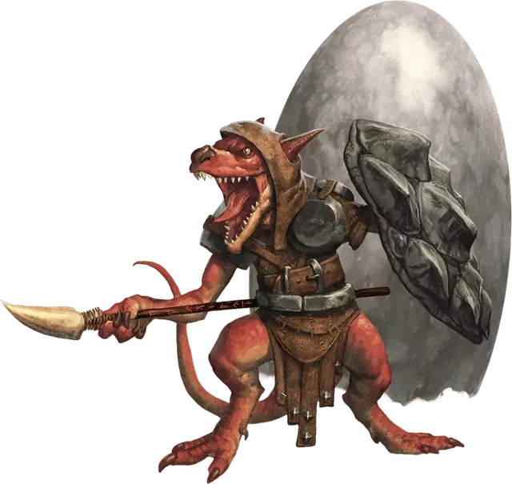

Кобольд драконий щит
Kobold Dragonshield
Маленький Гуманоид (Кобольд), законно-злой

Класс Доспеха 15 (кожаный доспех, щит)
Хиты 44 (8к6 + 16)
Скорость 20 футов
| мод | спас | ||
|---|---|---|---|
| СИЛ | 12 | +1 | +1 |
| ЛОВ | 15 | +2 | +2 |
| ТЕЛ | 14 | +2 | +2 |
| мод | спас | ||
|---|---|---|---|
| ИНТ | 8 | −1 | −1 |
| МДР | 9 | −1 | −1 |
| ХАР | 10 | +0 | +0 |
Навыки Восприятие +1
Чувства тёмное зрение 60 футов, пассивное Восприятие 11
Языки Общий, Драконий
Опасность 1 (200 опыта)
Бонус мастерства +2
Среда обитания Горы, Лес, Подземье, Холмы
Особенности
Драконье сопротивление. . Кобольд обладает сопротивлениями, зависящими от цвета дракона, наделившего его силой (выберите или определите броском к10):
• 1–2 кислота (чёрный);
• 3–4 холод (белый);
• 5–6 огонь (красный);
• 7–8 молния (синий);
• 9–10 яд (зеленый).
Сердце дракона. Если кобольд испуган или парализован эффектом, требующим спасброска, он может повторять спасбросок в начале каждого своего хода для того, чтобы окончить действие эффекта на себе и на всех кобольдах в радиусе 30 футов от него. Все кобольды, получающие пользу от этой черты (включая самого драконьего щита) получают преимущество на свой следующий бросок атаки.
Тактика стаи. Кобольд обладает преимуществом на броски атаки против существа, если хотя–бы один его союзник находится на расстоянии 5 футов от существа и если при этом этот союзник не пребывает в состоянии недееспособности.
Чувствительность к солнечному свету. Кобольд совершает с помехой броски атаки и проверки Мудрости (Восприятие), основанные на зрении, находясь на солнечном свете.
Действия
Мультиатака. Кобольд совершает две рукопашные атаки.
Копьё. . Рукопашная или Дальнобойная атака оружием: +3 к попаданию, досягаемость 5 футов или дистанция 20/60 футов, одна цель. Попадание: колющий урон 4 (1к6 + 1) или колющий урон 5 (1к8 + 1) при совершении рукопашной атаки удерживая оружие в обеих руках.
Описание
Кобольды драконьи щиты – сильнейшие представители своей расы. Почти все драконьи щиты начинают жизнь как нормальный кобольд и впоследствии становятся избранными драконов, наделенными большим могуществом для защиты драконьих яиц, но раз в несколько лет случается, что кобольд вылупляется со врождённой версией способностей драконьих щитов. Мастера ближнего боя, эти кобольды покрыты множеством шрамов, полученных в отчаянных схватках, и носят щиты, сделанные из сброшенных чешуек дракона.
Редкая храбрость. Драконьи щиты занимают почетные места в своих племенах, но, оставаясь в глубине души кобольдами, они чувствуют себя недостойными этого статуса, и поэтому отчаянно пытаются доказать, что заслуживают его. Природная кобольдская трусость все–таки сохраняется в драконьем щите, и поэтому он все же может сбежать от опасности. Но у него также есть и способность воспрянуть духом пред лицом верной смерти, вдохновив других кобольдов последовать за ним в атаку против вторгшихся в их норы врагов.
См. дополнительно статью: "Бестиарий: Кобольды"